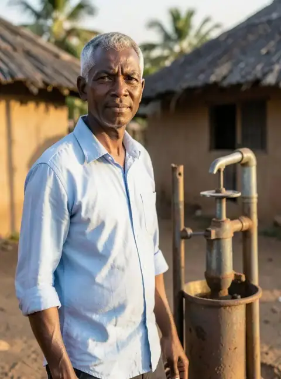
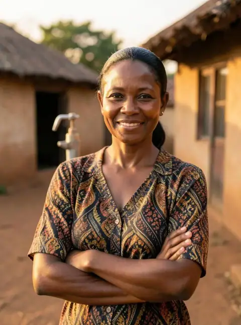
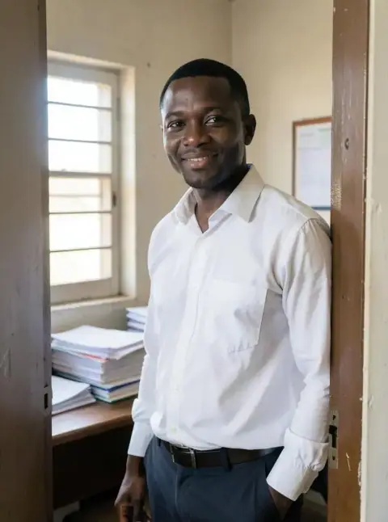
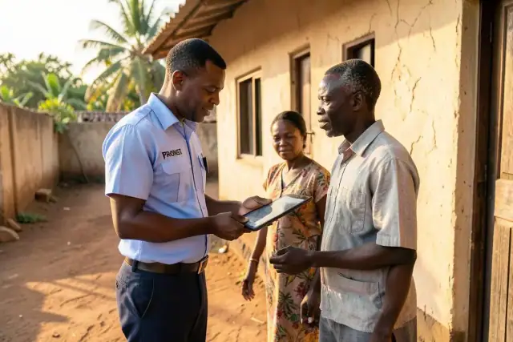

about
01 — who we are
A Ghanaian organisation, built to be fundable and then held to it.
ProNet drills, mechanises, builds latrines and trains communities across rural and peri-urban Ghana. We began as a two-person engineering outfit taking on small pump repairs, and grew into an organisation that can hand a donor a costed assessment, a line-item budget and a five-year maintenance record.
We are registered in Ghana, we work with district assemblies rather than around them, and we publish our functionality figures — including the ones that are not flattering.
02 — how we are organised
Engineering, community, administration.
Every project runs through the same three departments, which is what lets us budget on the same three lines and report against them.
Construction & engineering
Drilling supervision, pump and solar installation, mechanisation, latrine slabs, water quality testing, commissioning and the repair team.
Community engagement
Community entry, household surveys and assessments, hygiene education, committee formation and the three- and twelve-month follow-up visits.
Operations, proposals & finance
Proposal and contract writing, grant letters, procurement, payroll, financial reporting and coordination with district authorities.
03 — who you would be dealing with
A named person owns every line.

Fifteen years in rural water supply; signs the contracts and the reports.

Runs the technical and social departments; owns the functionality record.

Builds the line-item budgets and the procurement trail.
Names, roles and portraits are placeholders for this build.

04 — accountability
Show the failures or the success means nothing.
We report non-functional water points, budget lines that overran, and communities where hygiene practice slipped. Partners who have funded us twice have done so partly because of that.
05 — next
Come and see a site.
We would rather show you a pump in the Eastern Region than send a capability statement. Site visits can be arranged within a fortnight.